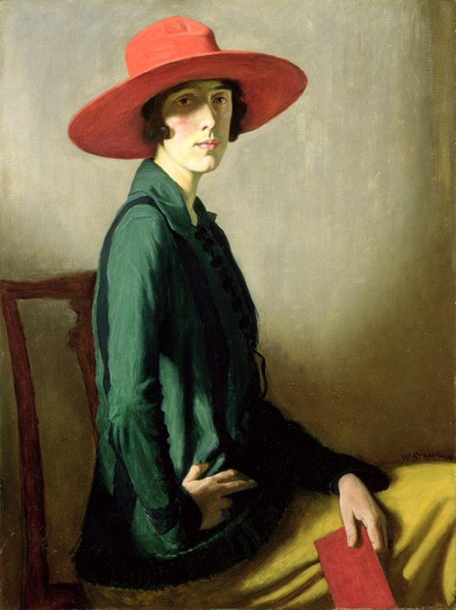
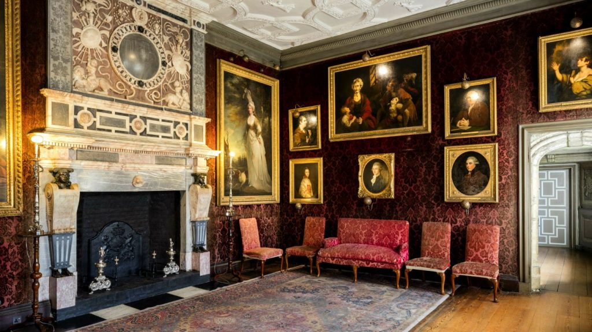

A Very English House
By Lucia Adams
“There is nothing quite like the English country house anywhere else in the world.” Vita Sackville-West
Living in northern England our main pastime besides climbing the Lakeland Fells was visiting stately homes which were National Trust properties. Close by was medieval Sizergh Castle where Bulmer cider bottles and signs of recent meals of the Hornyold -Strickland family were on the Elizabethan sideboards.
The National Trust for Places of Historic Interest or Natural Beauty, one of the largest charities in Britain, was founded in 1895 and given statutory powers with the National Trust Act 1907 allowing the aristocracy and land owning gentry to live in portions of their ancestral homes after donating them to the nation. Though many country homes have fallen many more have been saved especially after the Second World War.

Knole.
Over 500 heritage properties are in the competent hands of the Trust which also protects wild landscapes like the Lake District and Peak District, historic urban properties, nature reserves, fine gardens, industrial monuments, and social history sites. One of the largest private landowners in Britain it manages approximately 610,000 acres or 960 square miles of land. It is aided in the States by The Royal Oak Foundation, Americans in Alliance with the National Trust of England, Wales and Northern Island, launched in 1973 and raising hundreds of thousands of dollars for projects such as the conservation of the ballroom of the largest ancient heritage house in England, Knole, with its beautiful frieze, paneling, plaster ceiling and marble fireplace.

The ballroom at Knole.
In 2014 as part of the Royal Oak’s lecture series here at the Casino we learned about the saga of illegitimacy in the Sackville family in The Disinherited by board member the 7th Baron Sackville, author and publisher Robert Sackville-West. He and his family live in Knole, a Grade I stately home near Sevenoaks, Kent. It is situated in a 1,000 acre deer park, 50 acres of which is owned by the Trust though half the house has been kept by the family trust that also owns the remaining gardens and estate. It is open daily during the week to the public.

Robert Sackville-West at Knole.
The first Sackville, Herbrand de Sackville, came to England with William the Conqueror in 1066 then a medieval manor house was named for a Robert de Knole in 1290. The succeeding buildings were layered on the original medieval structure which during the Tudor period became the home of the Archbishops of Canterbury, mostly notably Thomas Cranmer who in 1538 gave it to Henry VIII. His daughter Queen Elizabeth I in 1603 gave it to Thomas Sackville, first Earl of Dorset and for over 400 years it has housed 13 generations of the Sackvilles.

Knole from the air.
The Jacobean embellishments are obvious in the facade and interiors with the conceit of a so-called calendar house, roughly 365 rooms, seven courtyards, Green Court, Stable Court, Stone Court, Water Court, Queen’s Court, Pheasant Court and Men’s Court, and 52 staircases. Its magnificent collection of furniture and paintings, Reynolds, Gainsborough, Kneller, Lely, is primarily 18th century and its1623 organ is the oldest playable one in England with four ranks of oak pipes. The house itself is sprawling, portentous and dark with Kentish ragstone and not as easy to love as the graceful Palladian symmetry from the great period of stately home architecture of 1630-1760.

Vita Sackville-West.
With bristling chauvinism Vita Sackville -West who grew up at Knole called the ancient pile a very English house, perfectly fitting into the deer part and landscape; with its many historic styles, irregular roofs, gables, essential medievalism, genius for domestic architecture it lacks “the taint of the nouveau riche”. The Sackvilles followed the Salic rules of primogeniture so though an only child she was prevented from inheriting Knole upon the death of her father Lionel. This succession drama continued into this century when Catherine Sackville -West a daughter of the 6th Baron Sackville had to cede ownership to the son of an uncle, her cousin Robert.

A Knole interior.
Vita wrote in her history of the house and in a guide to stately homes that Chatsworth, Castle Howard, Blenheim are plopped on the land and do not melt into the landscape — so are out of place are they in green, quiet England’s woods and fields. With sublime snobbery she thought that Vanbrugh could be compared to Noel Coward if he were to take up architecture, so anxious to please, so arriviste, so parvenu. When Knole was handed over to the National Trust in 1947 she felt it was a gross betrayal of her ancestors and tradition.

A lush Knole bedroom.
Henry James said the country house was the greatest of all English inventions as so many of us instinctively understand with all the pathetic fallacies of stately homes, the central characters in stories from Jane Eyre to Mandalay to Brideshead and Downton Abbey. One wonders what Vita would have thought of Julian Fellowes!

View into the inner walled garden.
Portrait of Vita Courtesy of Victoria Glendinning